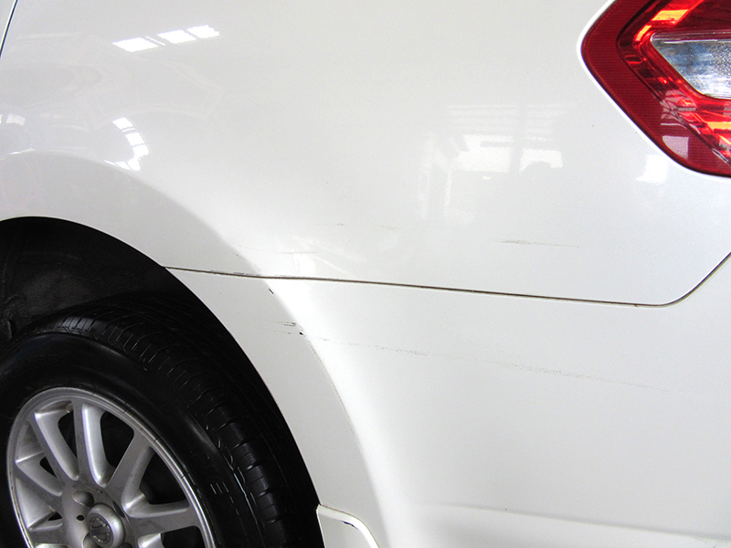
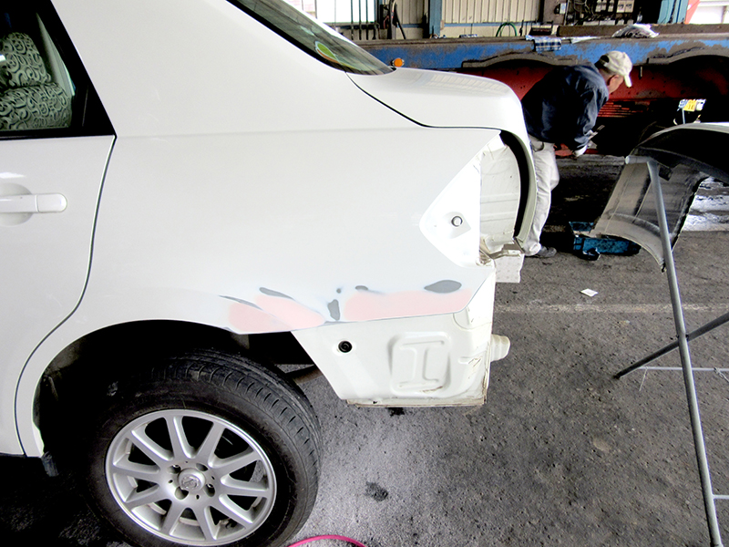
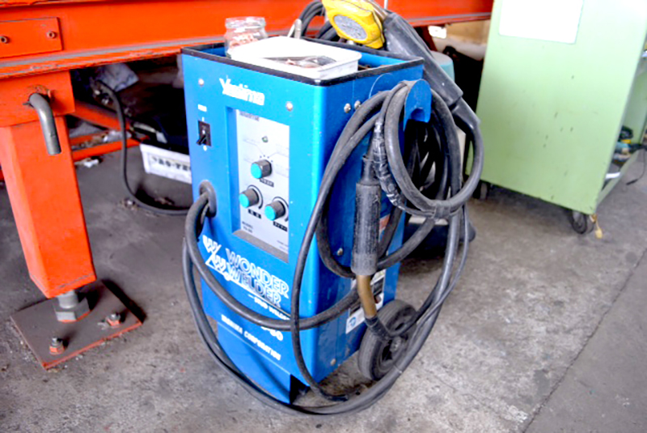
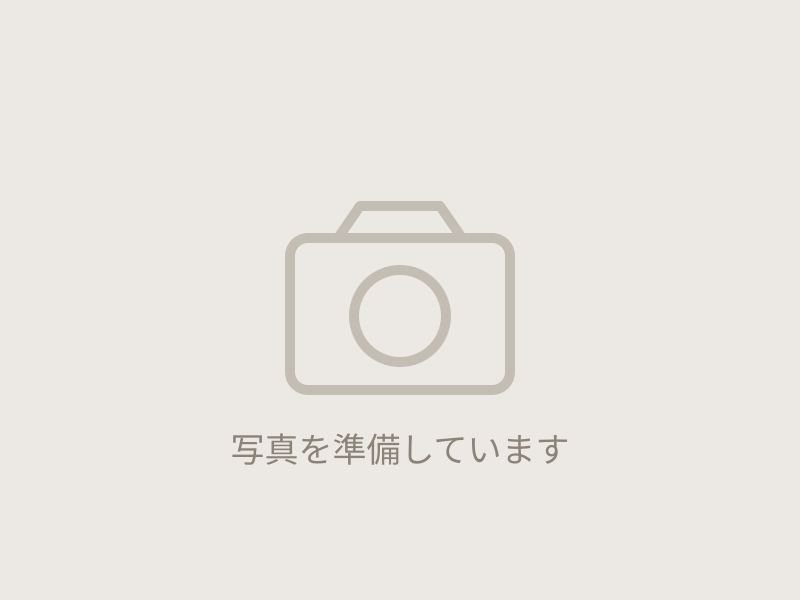
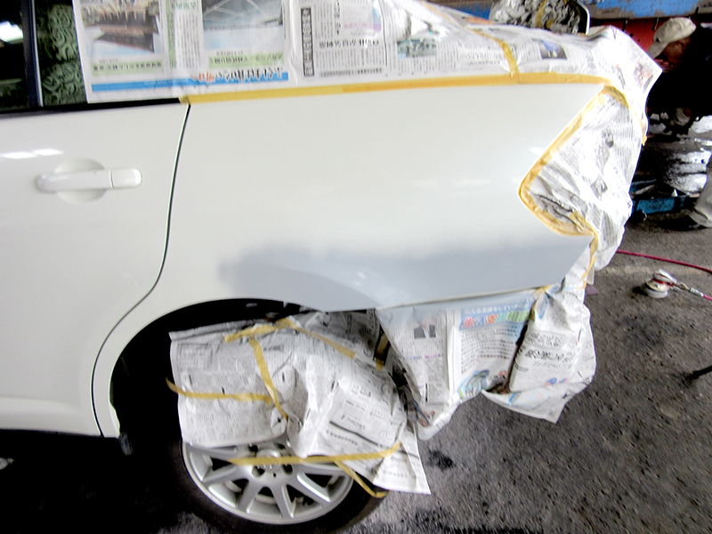
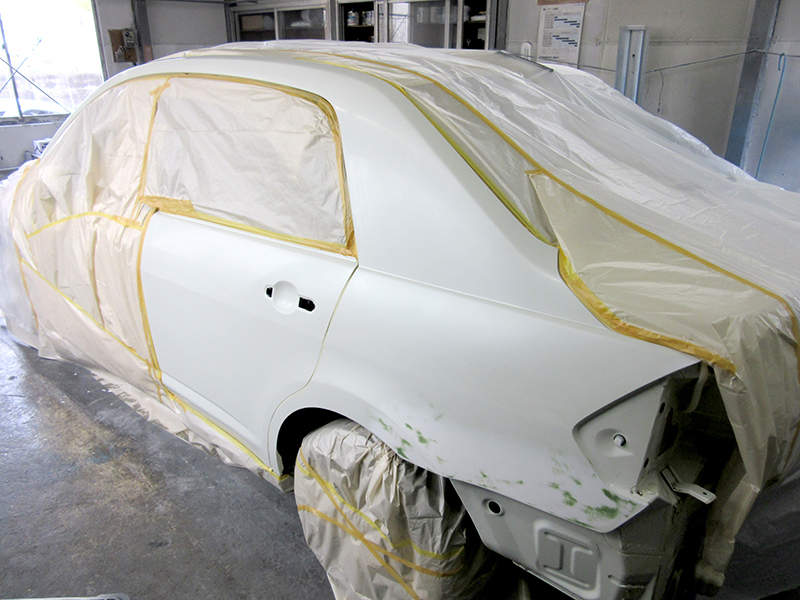
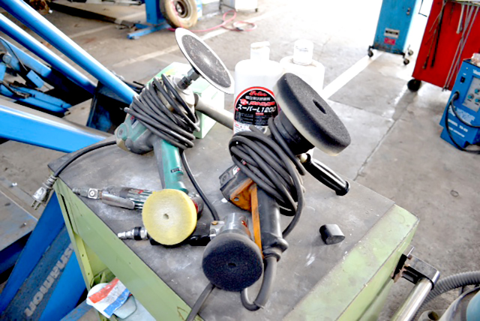
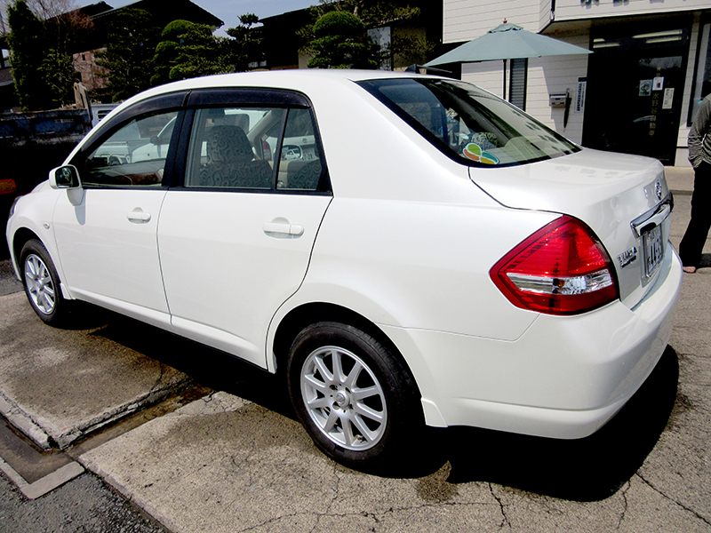
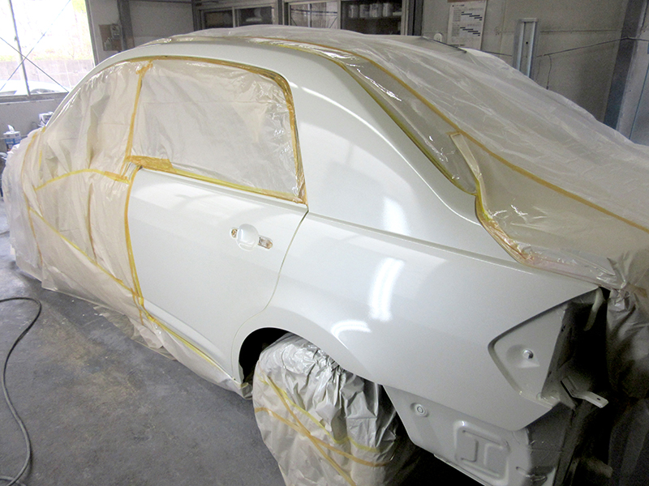

鈑金・塗装・ガラスリペア
小さなキズから、事故による
大きなダメージまで
完全に修復調整します。
熟練の技術で、鈑金・塗装・ガラスリペアまで
一貫して対応。

REPAIR & PAINT
修復工程
-
01損傷部分の確認

損傷の状態や範囲を確認し、修復方法や必要な作業を判断します。
-
02付属部分の取り外し分解

作業しやすいように、付属部品を取り外し分解します。
-
03叩き出し・粗出し作業

叩き出し・引き出し・ならし等の鈑金作業を行います。
-
04パテ付け作業

表面がほぼ元の状態まで復元された所でパテを薄く付けます。（パテ付けは最後の補修ですので、薄く付けます。）
-
05下地処理作業
パテが乾いたところで表面をサンドペーパーで粗目〜細目で研ぎ上げます。
-
06下塗り作業・マスキング

車体に合わせて塗料の色を調整します。養生は丁寧に行い、塗装箇所以外に塗料が付着しないようマスキングして上で塗装します。
-
07塗装作業

ベースカラーを3層以上塗装し、トップコート（クリア）を3層以上、合計6層以上の塗料の吹き付けを行い、さらに乾燥します。（現車は3コートのため同ドアまでボカシ塗装）
-
08磨き作業

十分に乾燥させて塗膜の硬度を高めます。乾燥したら、車体の色が統一になるように磨きます。
-
09組み付け作業

処理した部品を取り付け、正常に起動するかどうか確認、点検します。
BEFORE / AFTER
修復事例
-
BEFORE 
AFTER
確かな技術と丁寧な仕事で、見た目も安全性も元通りに。
小さなキズから事故修理まで、安心してお任せください。